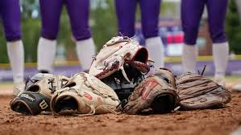

Timeline
2018: Started playing on a little league baseball team.
2020: Joined a rec softball team and began real practices.
2022: Began to take it more seriously and joined a more serious team and began practices and playing in the spring and fall with them.
2024: Tried out for my high school softball team, and began to play other more competitive teams. We also played as a team during the summer in a rec league.
2025: Practicing with my highschool team and have been practicing with them all year!
Who, what, when, and Where Inpirations
Who: My dad really inspired me to keep going with softball and to continue working hard and joining different teams all my life.
What: I really clicked with the sport and just found a lot of interest and fun with it.
When: Really when I was little was when I started playing and in the last couple of years I've gotten a lot more serious about the sport.
Where: I've played all over with so many different teams. I've played in little leagues, rec leagues, and now my high school team. I've practiced all over but the furthest I've ever played is either Arizona or St.George.
